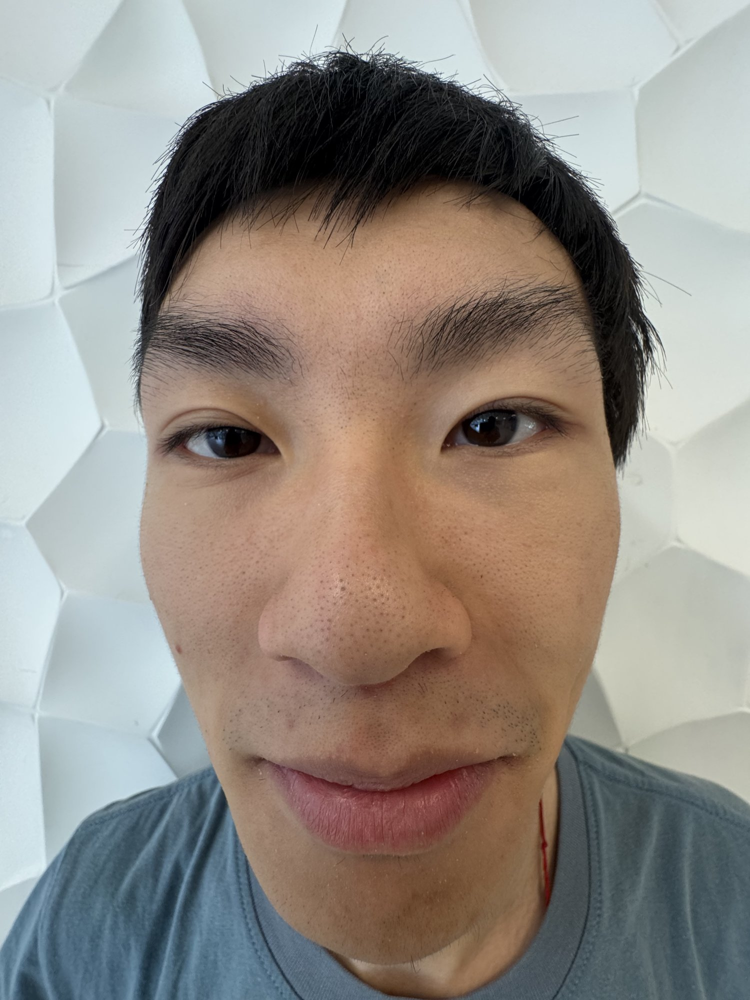
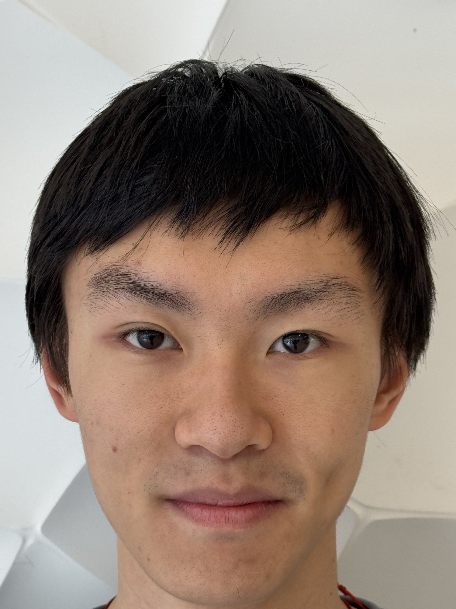
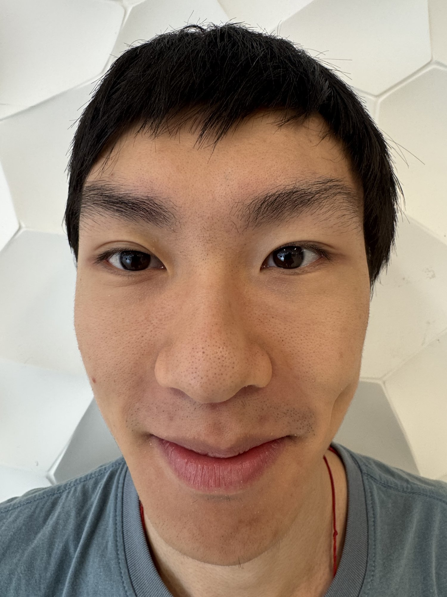
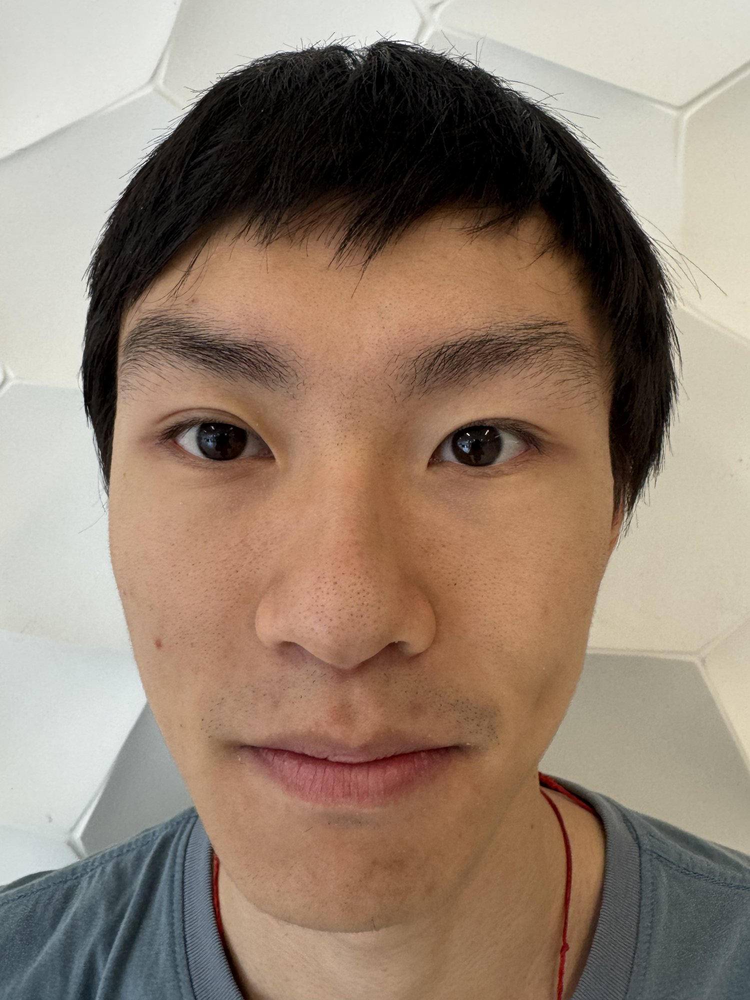
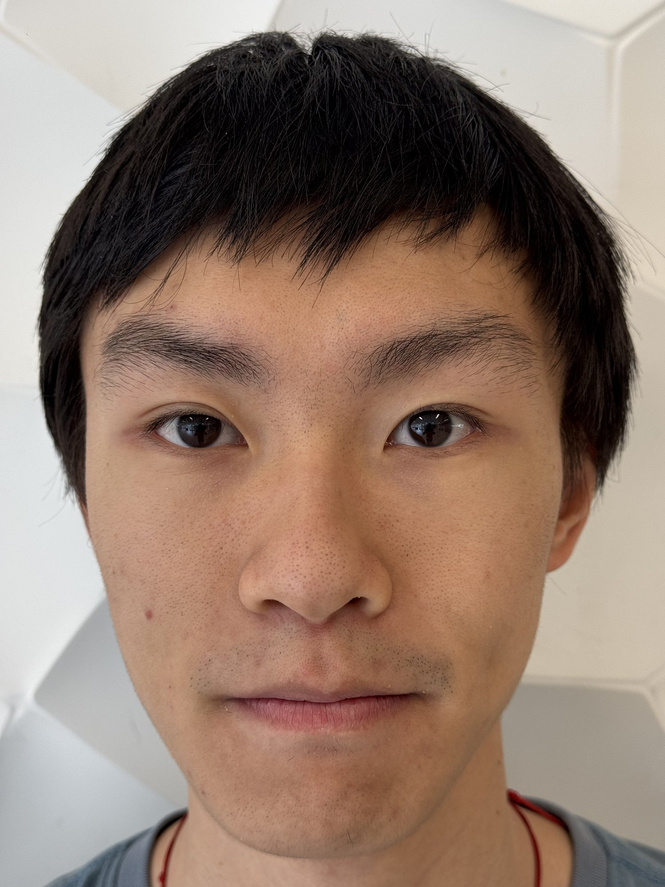

Becoming friends with your camera
The distance
between us.
The same face. Roughly the same size in the frame. Five frames while moving back reveal how profoundly camera position changes a portrait.
Move away. Zoom in. Look again.
A / The comparison
Close up / Step back
The framing stays similar. The proportions do not.


Compare the nose, ears, and outline of the face. In the close image, features nearest the camera are exaggerated. With the camera farther away, the relative distances to those features become more similar.
B / The sequence
A gradual change
Five frames, from near to far.



Numbers are 35 mm equivalent focal lengths recorded in the original HEIC image metadata. The phone uses different lenses and digital zoom across this sequence; these values describe framing, not measured camera-to-subject distance.
C / What changed?
It was where
the camera stood.
In a close portrait, the nose is much nearer to the camera than the ears. That distance difference makes the nearer features appear disproportionately large. When the camera moves back, the distance difference becomes a smaller fraction of the total distance, so the face looks more natural.
Zooming in after stepping back restores a similar face size in the frame. Zoom changes the framing; the camera position changes the perspective.
Zoom follows framing.
Sometimes the most useful camera setting is a step backward.
Return to the homepage